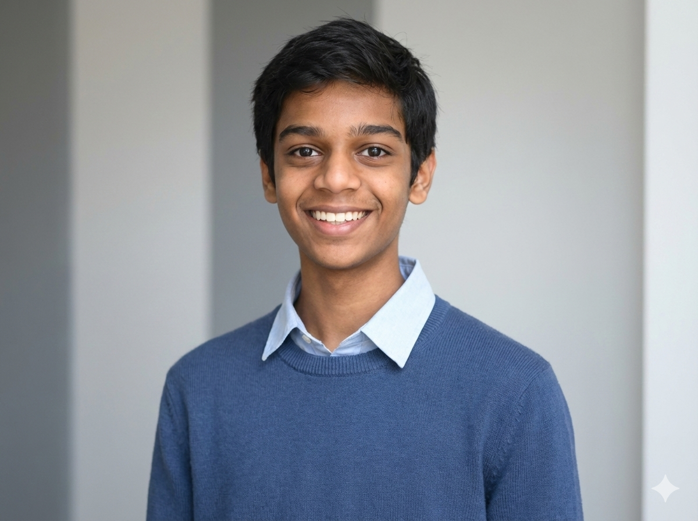

Welcome to my personal site!
I'm Bhardwaj Prasad Sutara, a high school student with a vision—building AI-driven technology that transforms how people create, build, and innovate. I’m deeply passionate about Artificial Intelligence, Robotics, and Sustainable Innovation. I founded InsightX, a research publishing organization, and served as Director of Product Development at STEM for Change, where I worked on sustainable energy solutions for underserved communities. Currently, I’m building ORIGIN AI — an offline + online hybrid AI assistant that goes far beyond chat. ORIGIN AI is designed to help engineers and creators ideate, code, automate, and build faster using privacy-first intelligence, real-time automation, and deep workflow integration. My goal is to make AI something you build with, not just use.
A full reskin of Linux Mint integrated with custom AI features. Built as an ambitious intelligent operating system environment.
View on GitHubMulti-model AI platform where 1 prompt runs across multiple models simultaneously. Features a courtroom reasoning mode where models debate each other to deliver the optimal verdict.
View on GitHubBrain MRI tumor classification developed using classical machine learning methodologies.
View on GitHub Read the PaperTerminal-based IDE and agentic AI coder coded fully in Python. Built for the Hack Club Macondo Hackathon.
View on GitHubFPGA-based INT8 NPU for MNIST digit recognition on a Xilinx Zynq-7000, implementing a custom AXI4-Lite Verilog accelerator that parallelizes four INT8 multiplications in hardware.
View on GitHubLow-cost, high-accuracy writing robot using 3 stepper motors and an Arduino Uno that writes and draws vectors. Built at Highway to Undercity @ GitHub HQ.
View on GitHubA fully autonomous creator agency website and platform powered by AI workflows.
View on GitHubCross-platform desktop application that embeds LLMs directly near your cursor. Part of the ORIGIN OS ecosystem.
View on GitHubMultimodal machine learning framework combining blood-smear image analysis and hematological measurements for leukemia classification.
View on GitHubQuadruped walking robot built with 8 servos and a Raspberry Pi Pico. Built for the Onboard Buildathon.
View on GitHubOptical data transmission project transferring audio signals using light and lasers to play directly on a speaker. Built for the Blueprint Hackathon.
View on GitHub